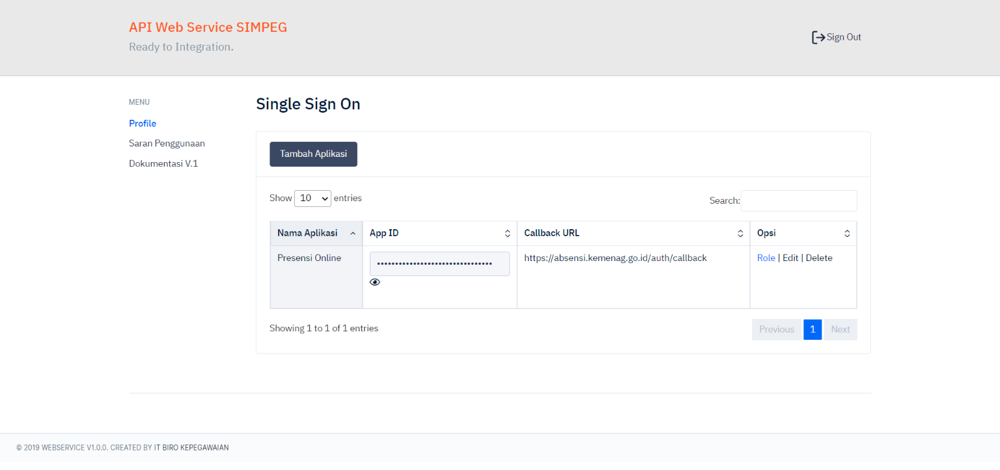

Single Sign On
1. Registrasi Aplikasi
Silahkan masuk ke halaman console api.kemenag.go.id dan buat aplikasi. Anda akan mendapatkan APP Id yang digunakan sebagai identifikasi aplikasi Anda.

2. Setting Client
Berisi data Jabatan Kementerian Agama.
1. Redirect ke SSO
Pastikan jika tidak ada session yang sudah terdaftar, alihkan ke halaman login SSO.
https://sso.kemenag.go.id?appid=[appid]
2. Respon SSO
SSO akan mengalihkan halaman/redirect ke URL Callback yang sudah didaftarkan dengan mengirimkan parameter token yang sudah digenerate.
https://aplikasi.kemenag.go.id?token=[token]
3. Verifikasi Token
GET /auth/verify HTTP/1.1
Host: sso.kemenag.go.id
Authorization: Bearer <bearer token>
PHP - CURL
<?php
$curl = curl_init();
curl_setopt_array($curl, array(
CURLOPT_URL => 'https://sso.kemenag.go.id/auth/verify',
CURLOPT_RETURNTRANSFER => true,
CURLOPT_ENCODING => '',
CURLOPT_MAXREDIRS => 10,
CURLOPT_TIMEOUT => 0,
CURLOPT_FOLLOWLOCATION => true,
CURLOPT_HTTP_VERSION => CURL_HTTP_VERSION_1_1,
CURLOPT_CUSTOMREQUEST => 'GET',
CURLOPT_HTTPHEADER => array(
'Authorization: Bearer <Token>'
),
));
$response = curl_exec($curl);
curl_close($curl);
echo $response;
4. Handle Respon
SSO akan memberikan data pegawai yang login. Silahkan gunakan untuk dikonsumsi. Bisa menggunakan session atau apapun.
{
"NIP": "1955xxxxxx",
"NIP_LAMA": "1502xxxx",
"NAMA": "Dr. H. IMAMxxxx",
"KODE_LEVEL_JABATAN": "202",
"KODE_JABATAN": "",
"JABATAN": "",
"FULL_JABATAN": "",
"PANGKAT": "Pembina Utama Muda",
"GOLONGAN": "IV/c",
"ROLE": "Jabatan Fungsional Tertentu",
"SSO_ROLE": "", //role yang terdaftar pada API
"KODE_SATKER_1": "04401xxxxx",
"SATKER_1": "Program Studi Magister Pendidikan Agama Islam",
"KODE_SATKER_2": "04401xxxxx",
"SATKER_2": "Program Studi Magister Pendidikan Agama Islam",
"KODE_SATKER_3": "04401xxxxx",
"SATKER_3": "Pascasarjana",
"KODE_SATKER_4": "04400xxxxxx",
"SATKER_4": "IAIN Pekalongan",
"KODE_SATKER_5": "04000xxxxxx",
"SATKER_5": "Institut Agama Islam Negeri (IAIN)",
"NO_HP": "",
"EMAIL": "",
}
Contoh Full Code (PHP - Codeigniter)
<?php
class Auth extends CI_Controller{
const SSO_URL = 'https://sso.kemenag.go.id/auth';
const SSO_SIGNIN = self::SSO_URL.'/signin';
const SSO_SIGNOUT = self::SSO_URL.'/signout';
const SSO_VERIFY = self::SSO_URL.'/verify';
const APP_ID = 'ID aplikasi yang terdaftar';
function index()
{
if (!$this->session->userdata('nip')) {
redirect(self::SSO_SIGNIN.'?appid='.self::APP_ID);
}else{
redirect('user/absen');
}
}
public function callback()
{
$token = $this->input->get('token') ?? '';
if($token){
$verify_url = self::SSO_VERIFY;
$ch = curl_init($verify_url);
curl_setopt($ch, CURLOPT_RETURNTRANSFER, true);
curl_setopt($ch, CURLOPT_CUSTOMREQUEST, 'POST');
curl_setopt($ch, CURLOPT_HTTPHEADER, ['Accept: application/json', 'Authorization: Bearer '. $token]);
$response = curl_exec($ch);
if (curl_errno($ch)) {
echo "CURL ERROR: ".curl_error($ch);
curl_close($ch);
exit();
}
curl_close($ch);
$ret = json_decode($response, true);
if($ret['status'] == 200)
{
$pegawai = $ret['pegawai'];
$session_data = array(
'nip_lama' => $pegawai['NIP_LAMA'],
'nip' => $pegawai['NIP'],
'jabatan' => $pegawai['KETERANGAN_JABATAN'],
'nama' => $pegawai['NAMA'],
'photo' => $pegawai['PHOTO'],
'sso_role' => $pegawai['SSO_ROLE'],
'satker1' => $pegawai['KODE_SATUAN_KERJA'],
'satker2' => $pegawai['KODE_SATKER_2'],
'satker3' => $pegawai['KODE_SATKER_3'],
'satker4' => $pegawai['KODE_SATKER_4'],
'satker5' => $pegawai['KODE_SATKER_5'],
'type' => 'user',
);
$this->session->set_userdata($session_data);
//jika valid
//redirect('wellcomepage');
}else{
//jika tidak valid
//redirect('auth');
}
}
else
{
die('Something Wrong');
}
}
public function logout()
{
$this->session->sess_destroy();
redirect($this->SSO_SIGNOUT);
}
public function is_loggedin($value='')
{
if($this->session->userdata('nip'))
{
return true;
}
return false;
}
}